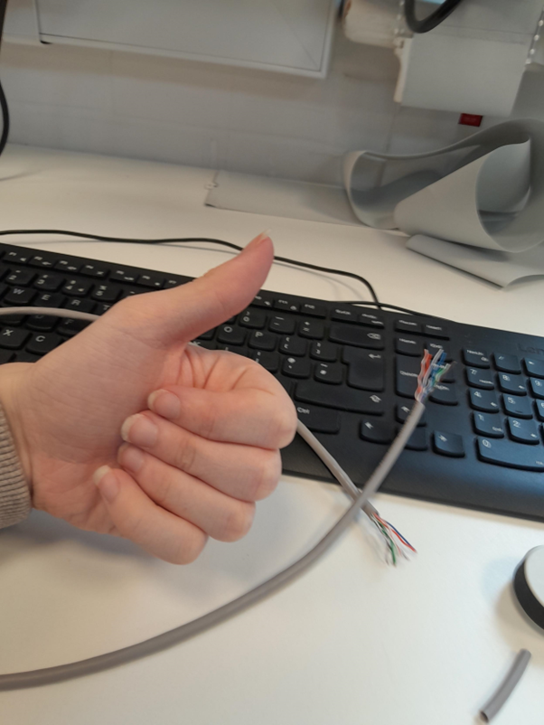
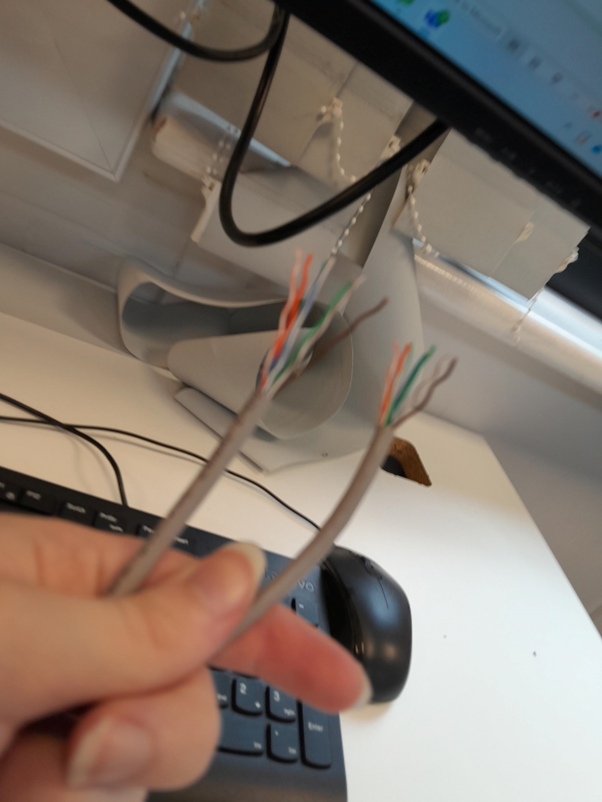
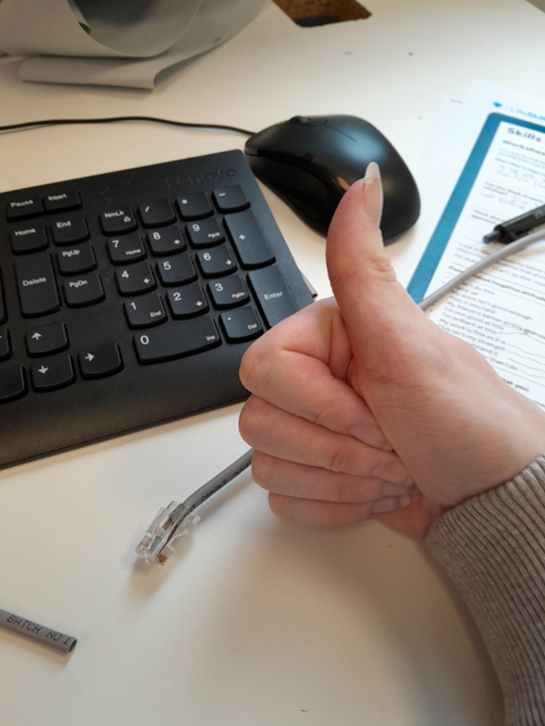
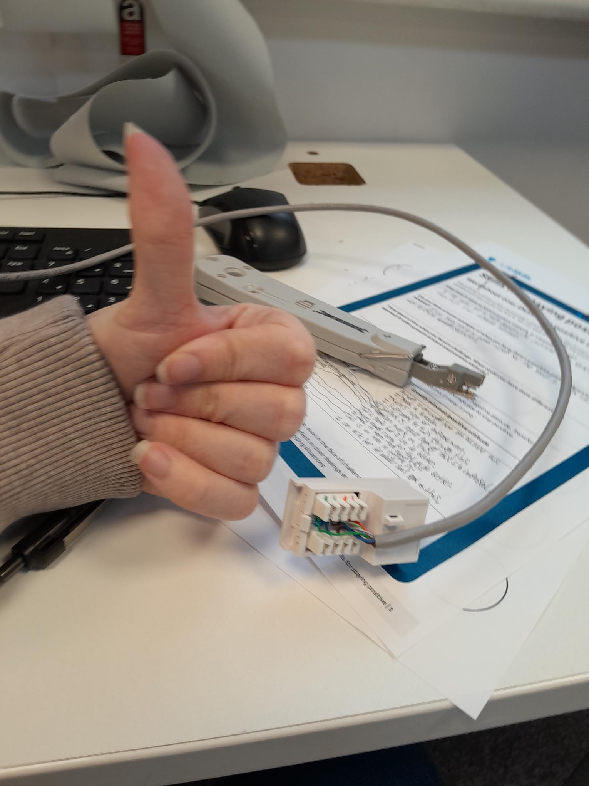

The HORRIFYING tale of how I made a Cat5e cable (well, really its just the instructions of how to make one.)
Pain. Suffering. Turmoil. Rage. All of these are what you shall feel if thou go through if you try to create a Cat5e CABLE , which I will tell you the CHILLING tale of how I, V Tony Kutomoro, the world record holder for least amount of brain cells in a living human (Zero), managed to craft my very own Cat5e cable, with some instructions incase anyone else wants to make one for what ever reason.
I bet your silly little noggin is wondering “What in Jebus’ name is Cat5e cable?” Well... you probably already know considering you’re a fancy beep boop computer person but if you forgot: A Cat5e cable is a cable you can mount into a wall and plug into a workspace device to have a wired access to the internet incase your device needs more broad speed (BPS). You can make one pretty simply if you have the following tools.
- CAT cable (The plastic tube that most cables and electronic connectors have, not the finished cable.)
- Cable Stripper (Cuts around the outside plastic of the cable, imagine a boxcutter but you have to put things through a hole to cut them.)
- RJ45 Crimp (Cuts down the internal wires, imagine a hedge-clipper but big and mechanical.)
- RJ45 Boot (The part of the cable you hold that is right before the part you plug into things with.)
- RJ45 Jack (The part of the cable that plugs into Ethernet cable slots.)
You might also try creating a Keystone, which you’ll need these for too.
The Cat5e cable you have made
A Keystone (A white block-like thing that has 8 miniature wires for the 8 different wires on the Cat5e cable to be slotted into)
A Krone/Punch tool (A Swiss army knife looking device that slots the wires into the Keystone and cuts off any over-hanging wires.)
Now, if you have all the right tools, we can begin the pain.
First of all, you will need to put your thumb up to either end of the CAT Cable and move it down the amount of space that would take up 2 widths of your thumb and use the Cable Stripper to cut the thin plastic around the outside plastic of the cable. If you cut too deep you might cut the wires (Stringy things inside the wire that do the transferring of data) themselves so please be mindful of that. To efficiently use the Cable Stripper, I recommend putting your thumb on the back grippy part and your index or middle finger through the hole, and then lifting the top part just slightly so it neatly cuts around the plastic shell. You may repeat this on both sides of the Cat5e Cable if you plan on making a Keystone later.

When you have done that, you should start untwisting and straightening out the wires on the ends you have stripped and putting them into a specific order. This order is called the ”T568-B” order. What does it mean? I dunno. But the order you will need to put the wires in are the following.
- Orange with white stripes
- Orange
- Green with white stripes
- Blue
- Blue with white stripes
- Green
- Brown with white stripes
- Brown

Once you have finished ordering the wires, you will need to put your thumb back on where the plastic part of the Cable is right before the cable and move it up about 1 thumb width. You will then need to cut the wires using the RJ45 crimp. I HEAVILY advise you cut your nails before using this because it’s really hard to cut the wires without worrying about cutting your nails too with them long. Don’t put away the Crimp yet though as you will need it later. You should also be careful not to cut the wires too short or sideways, I made that mistake once and I had to repeat the first 3 steps all over again, and I was very anxious about the whole thing so it took forever.
Penultimately, you will have to slide the RJ45 Boot up one of the ends of the cable until it reaches the part before the wires on the other end. Then you can put the RJ45 Jack onto the same end so that the wires have slid into it properly and the Boot is touching the Jack.
Finally, you can pick back up the Crimp from earlier. There should be a little RJ45 jack shaped hole somewhere on it. You will then insert this into the Crimp and squeeze it tightly, it should crimp the Jack and the Boot together so they don’t come apart and you will keep the order of the wires.

If you’ve done all of these steps and they’ve worked, HUZZAH! You now have a Cat5e cable that you can plug into your device to steal everyone else’s internet from them straight from the wall! MUWAHAHHAHAHA! Though, if you also want to make a Keystone, then don’t go running off yet.
If you haven’t done the first 3 steps for the opposite end of the Cable that doesn’t have a Jack on it, go do it now, it’s crucial to the next few steps.
Once you get the Keystone itself, you will find that there are 8 different colours and numbers in the different slots. These are actually the same colours and order as the T568B order from earlier, and give you an indication for where to put each wire.
Once you put a wire in its slot you will need to use the Krone/slot tool to keep it in there. You will need to have the blocky part at bottom of the Krone pointing inwards to the wire and the pointy part facing where the wire leaves the slot. You will then have to press it hard enough until you hear a thud and now the wire should be in the slot with any hanging over wire being cut off. Just do this for each wire in order and BAM, you have a Keystone!

That should be everything you need to create a Cat5e cable and/or a Keystone. If you have any more questions, just use google. I hope some of this helps! Cya!